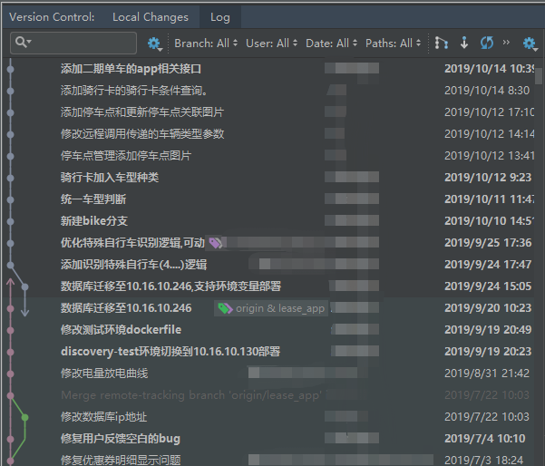
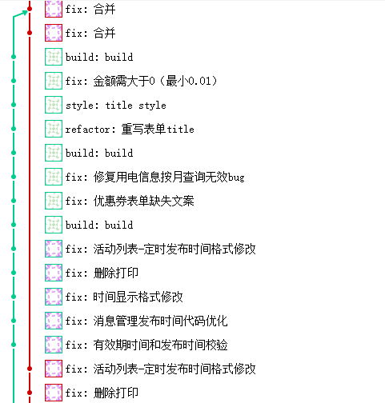
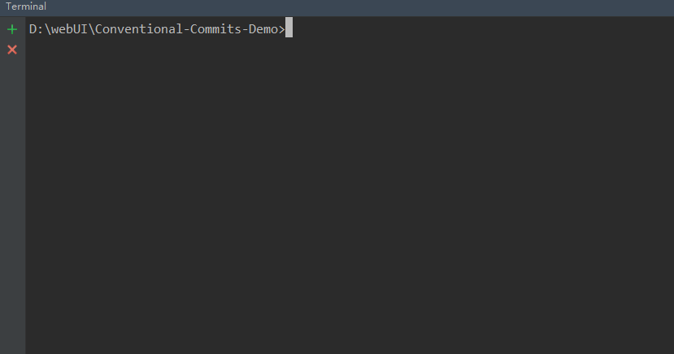

本文为介绍约定式提交，主要从以下几点展开：
本文对应的github项目地址：https://github.com/larscheng/Conventional-Commits-Demo
目前我们的项目在commit时基本上五花八门，各领风骚。虽然不如网上的那些恶搞commit记录，但是这一现象严重影响我们在阅读记录和查找bug原因时的效率。
我们可以感受下：

可以对比看看同样按照规范式提交的项目的commit记录

两种commit message的对比很明显说明了情况，统一的提交信息，不仅看起来舒服，而且读起来更舒服
其实已经越来越多的人开始意识到规范化提交的重要性，据我在公司实地采访了一圈，前端团队早已经开始约定式提交，这也可能是因为目前社区中主流的提交规范都是由Angular提交准则形成。
为了提高开发效率，减少在处理问题时耗费的时间，推荐大家在写完代码，提交时能够使用以下规范：
统一、简明)约定式提交：每次使用git commit 的时候都需要写commit message,如果message的 style是按照固定的模版格式书写，对于后期的维护和编写changelog都有巨大的好处。
而且现在的很多自动生成changelog的工具，都是建立在约定式提交的基础之上。
约定式提交规范是基于Angular提交准则形成，提交说明的结构如下：
<类型>([可选的作用域]): <描述>
// 空一行
[可选的正文]
// 空一行
[可选的脚注]其中，<类型>是为了向类库使用者表明其意图，其可选值为：
[可选的作用域]: 是为了描述 此次 commit 影响的范围，比如: route, component, utils, build, api, website, docs
<描述>: 此次提交的简短描述
[可选的正文]: 此次提交的详细描述，描述为什么修改，做了什么样的修改，以及开发的思路等等，输入 \n 换行
[可选的页脚]: 主要写下面2种
Commitizen是一个撰写合格 Commit message 的工具。
安装命令如下：任选其一
$ npm install -g commitizen (全局安装) $ npm install -d commitizen (项目安装)
然后，在项目目录里，运行下面的命令，使其支持 Angular 的 Commit message 格式。
$ commitizen init cz-conventional-changelog --save --save-exact
ps: 对于非Node项目(java、php...)在执行上一条命令前,需要手动创建package.json文件
$ npm init --yes
通过如上命令生成package.json文件基本格式如下：
{
"name": "demo",
"version": "0.0.0",
"private": true,
"scripts": {
"start": "node ./bin/www"
}
}以后，凡是用到git commit命令，一律改为使用git cz。这时，就会出现选项，用来生成符合格式的 Commit message。如图：

如果你的所有 Commit 都符合 Angular 格式，那么发布新版本时， Change log 就可以用脚本自动生成
standard-version就是生成 Change log 的工具
安装命令如下：任选其一
$ npm i -g standard-version (全局安装) $ npm i -S standard-version (项目安装)
生成CHANGELOG：
在package.json中的script中 加入配置:
"scirpt":{"release":"standard-version"}
直接执行，即可生成CHANGELOG文件
$ npm run release
备注：
生成CHANGELOG的工具很多，conventional-changelog-cli也可以用来生成CHANGELOG，安装使用方法和
standard-version类似
本项目的CHANGELOG生成实例：CHANGELOG查看